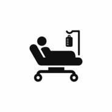
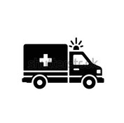
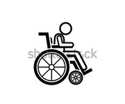

Comment rester en bonne santé?
- Mangez equilibré,legumes,fruit,proteines.
- Dormiez bien 7 a 8h par nuit,avec un rythme regulier.
- Gerer votre stress,respiration,meditation
CENTRE HOSPITALIER POWER ACADEMIE

NOU GEN DIFERAN BLOK TANKOU


